Chapter 7
Inheritance
Key Skills & Concepts
 Understand inheritance basics
Understand inheritance basics Call superclass constructors
Use super to access superclass members
Create a multilevel class hierarchy
Know when constructors are called
Understand superclass references to subclass objects
Override methods
Use overridden methods to achieve dynamic method dispatch
Use abstract classes
Use final
Know the Object class
Inheritance is one of the three foundation principles of object-oriented programming because it allows the creation of hierarchical classifications. Using inheritance, you can create a general class that defines traits common to a set of related items. This class can then be inherited by other, more specific classes, each adding those things that are unique to it.
In the language of Java, a class that is inherited is called a superclass. The class that does the inheriting is called a subclass. Therefore, a subclass is a specialized version of a superclass. It inherits all of the variables and methods defined by the superclass and adds its own, unique elements.
Inheritance Basics
Java supports inheritance by allowing one class to incorporate another class into its declaration. This is done by using the extends keyword. Thus, the subclass adds to (extends) the superclass.
Let’s begin with a short example that illustrates several of the key features of inheritance. The following program creates a superclass called TwoDShape, which stores the width and height of a two-dimensional object, and a subclass called Triangle. Notice how the keyword extends is used to create a subclass.
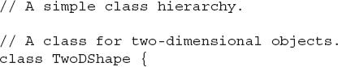
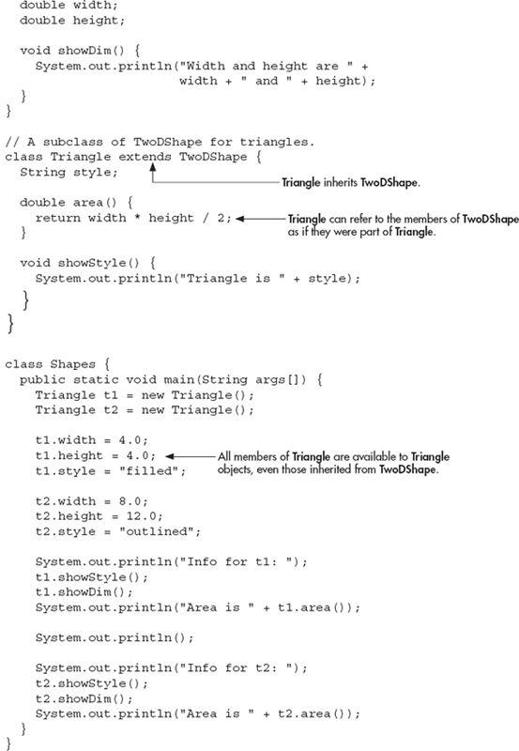
The output from this program is shown here:
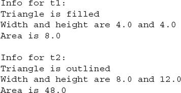
Here, TwoDShape defines the attributes of a “generic” two-dimensional shape, such as a square, rectangle, triangle, and so on. The Triangle class creates a specific type of TwoDShape, in this case, a triangle. The Triangle class includes all of TwoDObject and adds the field style, the method area( ), and the method showStyle( ). The triangle’s style is stored in style. This can be any string that describes the triangle, such as "filled", "outlined", "transparent", or even something like "warning symbol", "isosceles", or "rounded". The area( ) method computes and returns the area of the triangle, and showStyle( ) displays the triangle style.
Because Triangle includes all of the members of its superclass, TwoDShape, it can access width and height inside area( ). Also, inside main( ), objects t1 and t2 can refer to width and height directly, as if they were part of Triangle. Figure 7-1 depicts conceptually how TwoDShape is incorporated into Triangle.
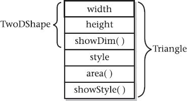
Figure 7-1 A conceptual depiction of the Triangle class
Even though TwoDShape is a superclass for Triangle, it is also a completely independent, stand-alone class. Being a superclass for a subclass does not mean that the superclass cannot be used by itself. For example, the following is perfectly valid:
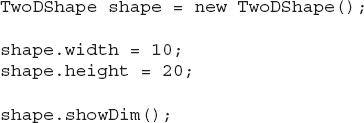
Of course, an object of TwoDShape has no knowledge of or access to any subclasses of TwoDShape.
The general form of a class declaration that inherits a superclass is shown here:
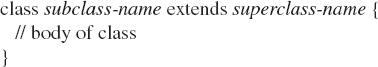
You can specify only one superclass for any subclass that you create. Java does not support the inheritance of multiple superclasses into a single subclass. (This differs from C++, in which you can inherit multiple base classes. Be aware of this when converting C++ code to Java.) You can, however, create a hierarchy of inheritance in which a subclass becomes a superclass of another subclass. Of course, no class can be a superclass of itself.
A major advantage of inheritance is that once you have created a superclass that defines the attributes common to a set of objects, it can be used to create any number of more specific subclasses. Each subclass can precisely tailor its own classification. For example, here is another subclass of TwoDShape that encapsulates rectangles:
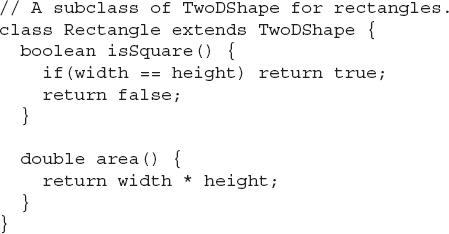
The Rectangle class includes TwoDShape and adds the methods isSquare( ), which determines if the rectangle is square, and area( ), which computes the area of a rectangle.
Member Access and Inheritance
As you learned in Chapter 6, often an instance variable of a class will be declared private to prevent its unauthorized use or tampering. Inheriting a class does not overrule the private access restriction. Thus, even though a subclass includes all of the members of its superclass, it cannot access those members of the superclass that have been declared private. For example, if, as shown here, width and height are made private in TwoDShape, then Triangle will not be able to access them:
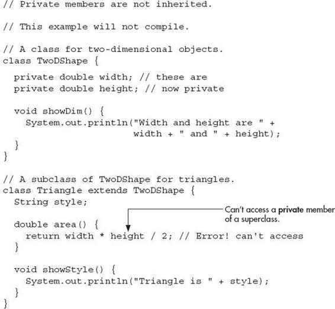
The Triangle class will not compile because the reference to width and height inside the area( ) method causes an access violation. Since width and height are declared private, they are accessible only by other members of their own class. Subclasses have no access to them.
Remember that a class member that has been declared private will remain private to its class. It is not accessible by any code outside its class, including subclasses.
At first, you might think that the fact that subclasses do not have access to the private members of superclasses is a serious restriction that would prevent the use of private members in many situations. However, this is not true. As explained in Chapter 6, Java programmers typically use accessor methods to provide access to the private members of a class. Here is a rewrite of the TwoDShape and Triangle classes that uses methods to access the private instance variables width and height:
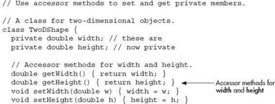
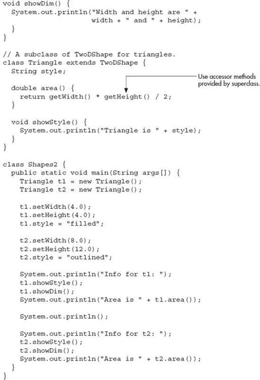
Ask the Expert
Q: When should I make an instance variable private?
A: There are no hard and fast rules, but here are two general principles. If an instance variable is to be used only by methods defined within its class, then it should be made private. If an instance variable must be within certain bounds, then it should be private and made available only through accessor methods. This way, you can prevent invalid values from being assigned.
Constructors and Inheritance
In a hierarchy, it is possible for both superclasses and subclasses to have their own constructors. This raises an important question: What constructor is responsible for building an object of the subclass—the one in the superclass, the one in the subclass, or both? The answer is this: The constructor for the superclass constructs the superclass portion of the object, and the constructor for the subclass constructs the subclass part. This makes sense because the superclass has no knowledge of or access to any element in a subclass. Thus, their construction must be separate. The preceding examples have relied upon the default constructors created automatically by Java, so this was not an issue. However, in practice, most classes will have explicit constructors. Here you will see how to handle this situation.
When only the subclass defines a constructor, the process is straightforward: simply construct the subclass object. The superclass portion of the object is constructed automatically using its default constructor. For example, here is a reworked version of Triangle that defines a constructor. It also makes style private, since it is now set by the constructor.
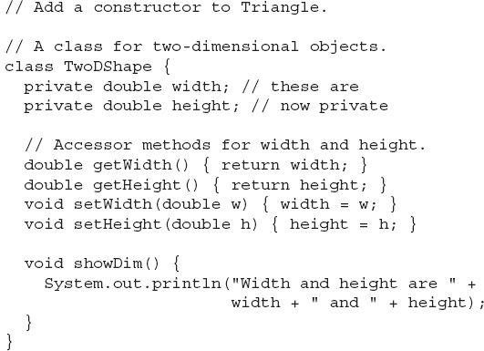
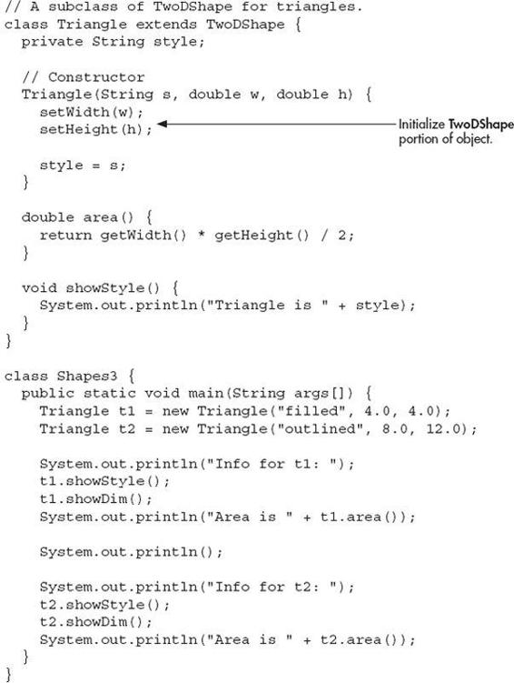
Here, Triangle’s constructor initializes the members of TwoDClass that it inherits along with its own style field.
When both the superclass and the subclass define constructors, the process is a bit more complicated because both the superclass and subclass constructors must be executed. In this case, you must use another of Java’s keywords, super, which has two general forms. The first calls a superclass constructor. The second is used to access a member of the superclass that has been hidden by a member of a subclass. Here, we will look at its first use.
Using super to Call Superclass Constructors
A subclass can call a constructor defined by its superclass by use of the following form of super:
super(parameter-list);
Here, parameter-list specifies any parameters needed by the constructor in the superclass. super( ) must always be the first statement executed inside a subclass constructor. To see how super( ) is used, consider the version of TwoDShape in the following program. It defines a constructor that initializes width and height.
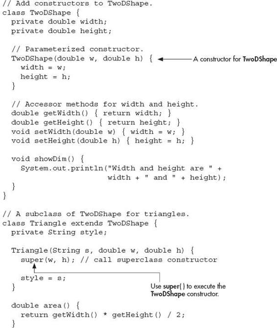
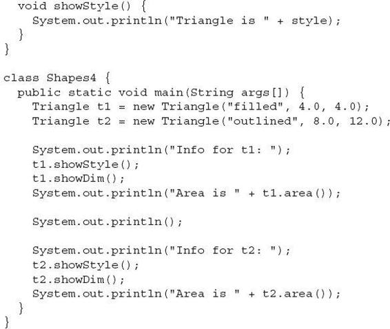
Here, Triangle( ) calls super( ) with the parameters w and h. This causes the TwoDShape( ) constructor to be called, which initializes width and height using these values. Triangle no longer initializes these values itself. It need only initialize the value unique to it: style. This leaves TwoDShape free to construct its subobject in any manner that it so chooses. Furthermore, TwoDShape can add functionality about which existing subclasses have no knowledge, thus preventing existing code from breaking.
Any form of constructor defined by the superclass can be called by super( ). The constructor executed will be the one that matches the arguments. For example, here are expanded versions of both TwoDShape and Triangle that include default constructors and constructors that take one argument:
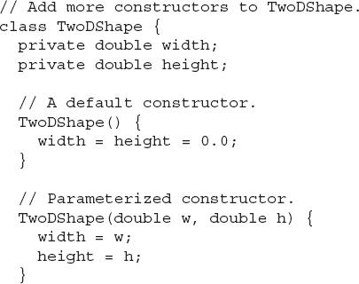
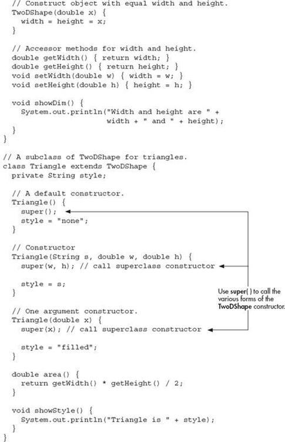
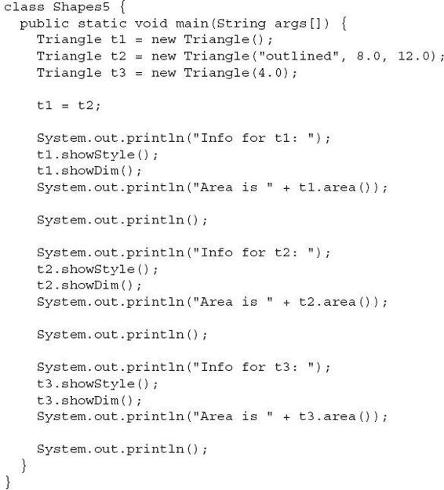
Here is the output from this version:
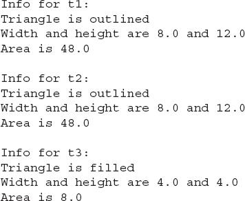
Let’s review the key concepts behind super( ). When a subclass calls super( ), it is calling the constructor of its immediate superclass. Thus, super( ) always refers to the superclass immediately above the calling class. This is true even in a multilevel hierarchy. Also, super( ) must always be the first statement executed inside a subclass constructor.
Using super to Access Superclass Members
There is a second form of super that acts somewhat like this, except that it always refers to the superclass of the subclass in which it is used. This usage has the following general form:
super.member
Here, member can be either a method or an instance variable.
This form of super is most applicable to situations in which member names of a subclass hide members by the same name in the superclass. Consider this simple class hierarchy:
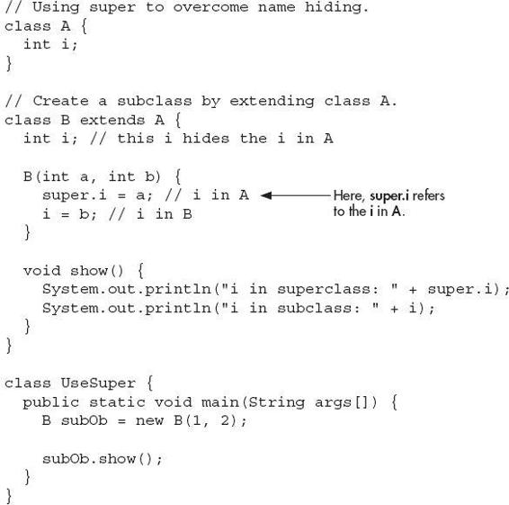
This program displays the following:
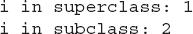
Although the instance variable i in B hides the i in A, super allows access to the i defined in the superclass. super can also be used to call methods that are hidden by a subclass.
| Try This 7–1 |
Extending the Vehicle Class |
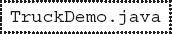
To illustrate the power of inheritance, we will extend the Vehicle class first developed in Chapter 4. As you should recall, Vehicle encapsulates information about vehicles, including the number of passengers they can carry, their fuel capacity, and their fuel consumption rate. We can use the Vehicle class as a starting point from which more specialized classes are developed. For example, one type of vehicle is a truck. An important attribute of a truck is its cargo capacity. Thus, to create a Truck class, you can extend Vehicle, adding an instance variable that stores the carrying capacity. Here is a version of Truck that does this. In the process, the instance variables in Vehicle will be made private, and accessor methods are provided to get and set their values.
1. Create a file called TruckDemo.java and copy the last implementation of Vehicle from Chapter 4 into the file:
2. Create the Truck class as shown here:
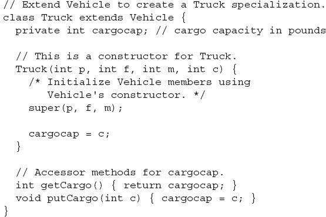
Here, Truck inherits Vehicle, adding cargocap, getCargo( ), and putCargo( ). Thus, Truck includes all of the general vehicle attributes defined by Vehicle. It need add only those items that are unique to its own class.
3. Next, make the instance variables of Vehicle private, as shown here:
4. Here is an entire program that demonstrates the Truck class:
5. The output from this program is shown here:
6. Many other types of classes can be derived from Vehicle. For example, the following skeleton creates an off-road class that stores the ground clearance of the vehicle.
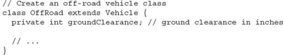
The key point is that once you have created a superclass that defines the general aspects of an object, that superclass can be inherited to form specialized classes. Each subclass simply adds its own, unique attributes. This is the essence of inheritance.
Creating a Multilevel Hierarchy
Up to this point, we have been using simple class hierarchies that consist of only a superclass and a subclass. However, you can build hierarchies that contain as many layers of inheritance as you like. As mentioned, it is perfectly acceptable to use a subclass as a superclass of another. For example, given three classes called A, B, and C, C can be a subclass of B, which is a subclass of A. When this type of situation occurs, each subclass inherits all of the traits found in all of its superclasses. In this case, C inherits all aspects of B and A.
To see how a multilevel hierarchy can be useful, consider the following program. In it, the subclass Triangle is used as a superclass to create the subclass called ColorTriangle. ColorTriangle inherits all of the traits of Triangle and TwoDShape and adds a field called color, which holds the color of the triangle.
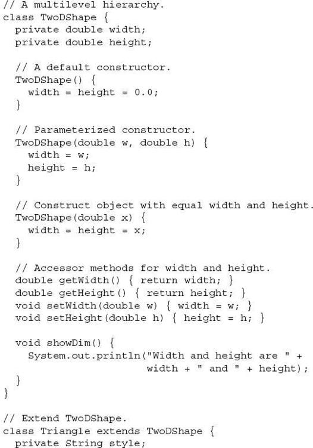
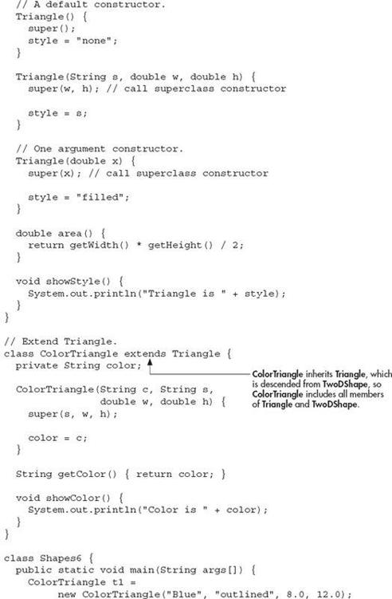
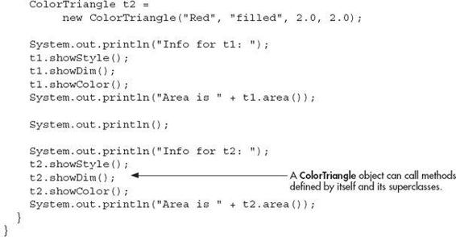
The output of this program is shown here:
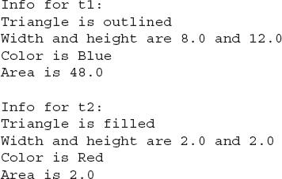
Because of inheritance, ColorTriangle can make use of the previously defined classes of Triangle and TwoDShape, adding only the extra information it needs for its own, specific application. This is part of the value of inheritance; it allows the reuse of code.
This example illustrates one other important point: super( ) always refers to the constructor in the closest superclass. The super( ) in ColorTriangle calls the constructor in Triangle. The super( ) in Triangle calls the constructor in TwoDShape. In a class hierarchy, if a superclass constructor requires parameters, then all subclasses must pass those parameters “up the line.” This is true whether or not a subclass needs parameters of its own.
When Are Constructors Executed?
In the foregoing discussion of inheritance and class hierarchies, an important question may have occurred to you: When a subclass object is created, whose constructor is executed first, the one in the subclass or the one defined by the superclass? For example, given a subclass called B and a superclass called A, is A’s constructor executed before B’s, or vice versa? The answer is that in a class hierarchy, constructors complete their execution in order of derivation, from superclass to subclass. Further, since super( ) must be the first statement executed in a subclass’ constructor, this order is the same whether or not super( ) is used. If super( ) is not used, then the default (parameterless) constructor of each superclass will be executed. The following program illustrates when constructors are executed:
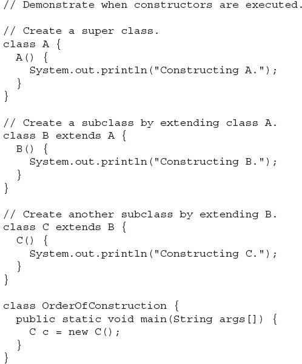
The output from this program is shown here:
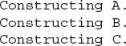
As you can see, the constructors are executed in order of derivation.
If you think about it, it makes sense that constructors are executed in order of derivation. Because a superclass has no knowledge of any subclass, any initialization it needs to perform is separate from and possibly prerequisite to any initialization performed by the subclass. Therefore, it must complete its execution first.
Superclass References and Subclass Objects
As you know, Java is a strongly typed language. Aside from the standard conversions and automatic promotions that apply to its primitive types, type compatibility is strictly enforced. Therefore, a reference variable for one class type cannot normally refer to an object of another class type. For example, consider the following program:
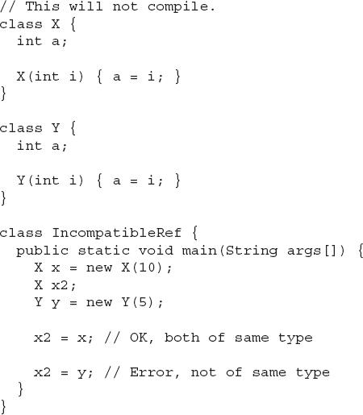
Here, even though class X and class Y are structurally the same, it is not possible to assign an X reference to a Y object because they have different types. In general, an object reference variable can refer only to objects of its type.
There is, however, an important exception to Java’s strict type enforcement. A reference variable of a superclass can be assigned a reference to an object of any subclass derived from that superclass. In other words, a superclass reference can refer to a subclass object. Here is an example:
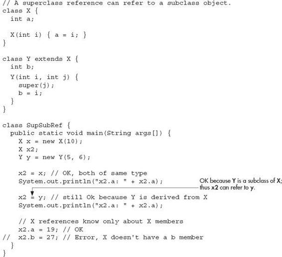
Here, Y is now derived from X; thus, it is permissible for x2 to be assigned a reference to a Y object.
It is important to understand that it is the type of the reference variable—not the type of the object that it refers to—that determines what members can be accessed. That is, when a reference to a subclass object is assigned to a superclass reference variable, you will have access only to those parts of the object defined by the superclass. This is why x2 can’t access b even when it refers to a Y object. If you think about it, this makes sense, because the superclass has no knowledge of what a subclass adds to it. This is why the last line of code in the program is commented out.
Although the preceding discussion may seem a bit esoteric, it has some important practical applications. One is described here. The other is discussed later in this chapter, when method overriding is covered.
An important place where subclass references are assigned to superclass variables is when constructors are called in a class hierarchy. As you know, it is common for a class to define a constructor that takes an object of the class as a parameter. This allows the class to construct a copy of an object. Subclasses of such a class can take advantage of this feature. For example, consider the following versions of TwoDShape and Triangle. Both add constructors that take an object as a parameter.
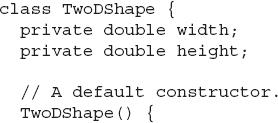
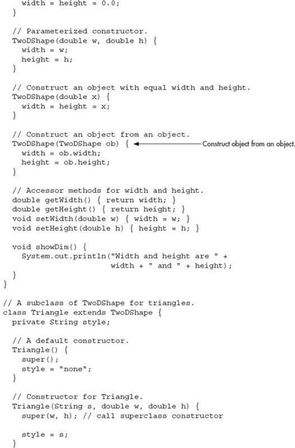
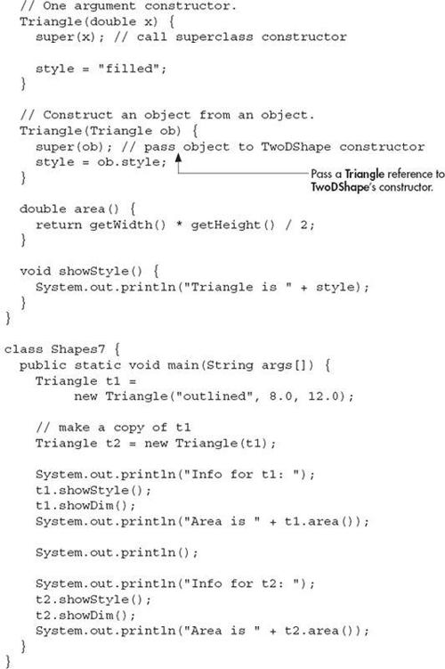
In this program, t2 is constructed from t1 and is, thus, identical. The output is shown here:
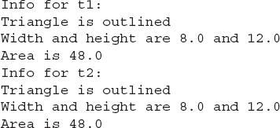
Pay special attention to this Triangle constructor:
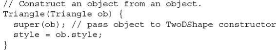
It receives an object of type Triangle and it passes that object (through super) to this TwoDShape constructor:
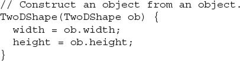
The key point is that TwoDshape( ) is expecting a TwoDShape object. However, Triangle( ) passes it a Triangle object. The reason this works is because, as explained, a superclass reference can refer to a subclass object. Thus, it is perfectly acceptable to pass TwoDShape( ) a reference to an object of a class derived from TwoDShape. Because the TwoDShape( ) constructor is initializing only those portions of the subclass object that are members of TwoDShape, it doesn’t matter that the object might also contain other members added by derived classes.
Method Overriding
In a class hierarchy, when a method in a subclass has the same return type and signature as a method in its superclass, then the method in the subclass is said to override the method in the superclass. When an overridden method is called from within a subclass, it will always refer to the version of that method defined by the subclass. The version of the method defined by the superclass will be hidden. Consider the following:
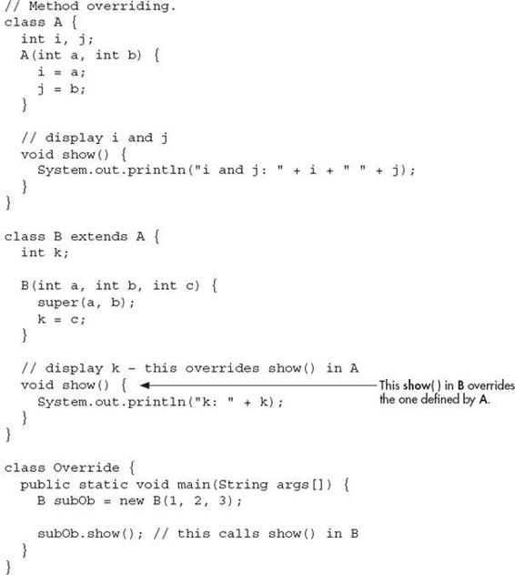
The output produced by this program is shown here:
When show( ) is invoked on an object of type B, the version of show( ) defined within B is used. That is, the version of show( ) inside B overrides the version declared in A.
If you want to access the superclass version of an overridden method, you can do so by using super. For example, in this version of B, the superclass version of show( ) is invoked within the subclass’ version. This allows all instance variables to be displayed.
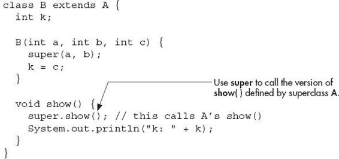
If you substitute this version of show( ) into the previous program, you will see the following output:
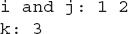
Here, super.show( ) calls the superclass version of show( ).
Method overriding occurs only when the signatures of the two methods are identical. If they are not, then the two methods are simply overloaded. For example, consider this modified version of the preceding example:
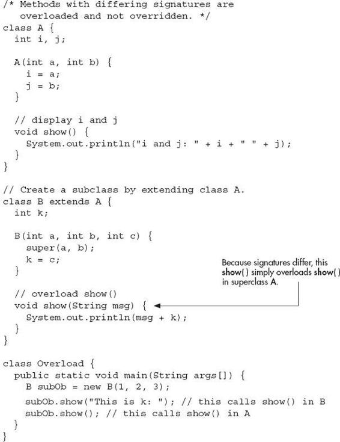
The output produced by this program is shown here:
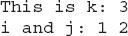
The version of show( ) in B takes a string parameter. This makes its signature different from the one in A, which takes no parameters. Therefore, no overriding (or name hiding) takes place.
Overridden Methods Support Polymorphism
While the examples in the preceding section demonstrate the mechanics of method overriding, they do not show its power. Indeed, if there were nothing more to method overriding than a namespace convention, then it would be, at best, an interesting curiosity but of little real value. However, this is not the case. Method overriding forms the basis for one of Java’s most powerful concepts: dynamic method dispatch. Dynamic method dispatch is the mechanism by which a call to an overridden method is resolved at run time rather than compile time. Dynamic method dispatch is important because this is how Java implements run-time polymorphism.
Let’s begin by restating an important principle: a superclass reference variable can refer to a subclass object. Java uses this fact to resolve calls to overridden methods at run time. Here’s how. When an overridden method is called through a superclass reference, Java determines which version of that method to execute based upon the type of the object being referred to at the time the call occurs. Thus, this determination is made at run time. When different types of objects are referred to, different versions of an overridden method will be called. In other words, it is the type of the object being referred to (not the type of the reference variable) that determines which version of an overridden method will be executed. Therefore, if a superclass contains a method that is overridden by a subclass, then when different types of objects are referred to through a superclass reference variable, different versions of the method are executed.
Here is an example that illustrates dynamic method dispatch:
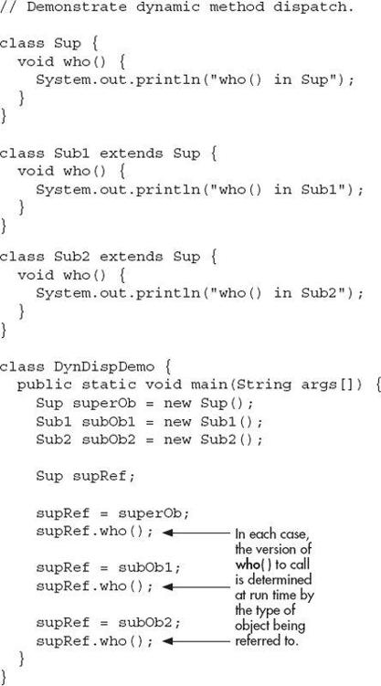
The output from the program is shown here:
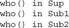
This program creates a superclass called Sup and two subclasses of it, called Sub1 and Sub2. Sup declares a method called who( ), and the subclasses override it. Inside the main( ) method, objects of type Sup, Sub1, and Sub2 are declared. Also, a reference of type Sup, called supRef, is declared. The program then assigns a reference to each type of object to supRef and uses that reference to call who( ). As the output shows, the version of who( ) executed is determined by the type of object being referred to at the time of the call, not by the class type of supRef.
Ask the Expert
Q: Overridden methods in Java look a lot like virtual functions in C++. Is there a similarity?
A: Yes. Readers familiar with C++ will recognize that overridden methods in Java are equivalent in purpose and similar in operation to virtual functions in C++.
Why Overridden Methods?
As stated earlier, overridden methods allow Java to support run-time polymorphism. Polymorphism is essential to object-oriented programming for one reason: it allows a general class to specify methods that will be common to all of its derivatives, while allowing subclasses to define the specific implementation of some or all of those methods. Overridden methods are another way that Java implements the “one interface, multiple methods” aspect of polymorphism. Part of the key to successfully applying polymorphism is understanding that the superclasses and subclasses form a hierarchy that moves from lesser to greater specialization. Used correctly, the superclass provides all elements that a subclass can use directly. It also defines those methods that the derived class must implement on its own. This allows the subclass the flexibility to define its own methods, yet still enforces a consistent interface. Thus, by combining inheritance with overridden methods, a superclass can define the general form of the methods that will be used by all of its subclasses.
Applying Method Overriding to TwoDShape
To better understand the power of method overriding, we will apply it to the TwoDShape class. In the preceding examples, each class derived from TwoDShape defines a method called area( ). This suggests that it might be better to make area( ) part of the TwoDShape class, allowing each subclass to override it, defining how the area is calculated for the type of shape that the class encapsulates. The following program does this. For convenience, it also adds a name field to TwoDShape. (This makes it easier to write demonstration programs.)
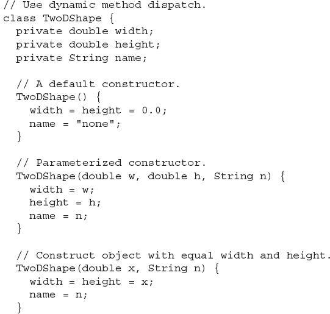
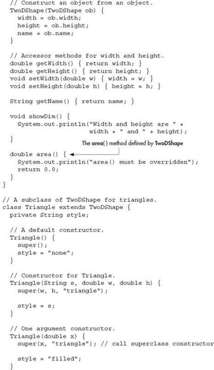
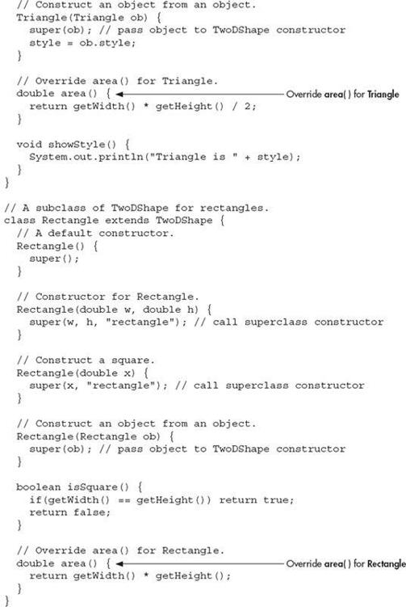
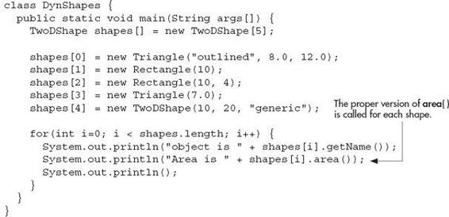
The output from the program is shown here:
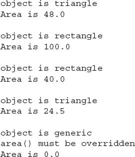
Let’s examine this program closely. First, as explained, area( ) is now part of the TwoDShape class and is overridden by Triangle and Rectangle. Inside TwoDShape, area( ) is given a placeholder implementation that simply informs the user that this method must be overridden by a subclass. Each override of area( ) supplies an implementation that is suitable for the type of object encapsulated by the subclass. Thus, if you were to implement an ellipse class, for example, then area( ) would need to compute the area( ) of an ellipse.
There is one other important feature in the preceding program. Notice in main( ) that shapes is declared as an array of TwoDShape objects. However, the elements of this array are assigned Triangle, Rectangle, and TwoDShape references. This is valid because, as explained, a superclass reference can refer to a subclass object. The program then cycles through the array, displaying information about each object. Although quite simple, this illustrates the power of both inheritance and method overriding. The type of object referred to by a superclass reference variable is determined at run time and acted on accordingly. If an object is derived from TwoDShape, then its area can be obtained by calling area( ). The interface to this operation is the same no matter what type of shape is being used.
Using Abstract Classes
Sometimes you will want to create a superclass that defines only a generalized form that will be shared by all of its subclasses, leaving it to each subclass to fill in the details. Such a class determines the nature of the methods that the subclasses must implement but does not, itself, provide an implementation of one or more of these methods. One way this situation can occur is when a superclass is unable to create a meaningful implementation for a method. This is the case with the version of TwoDShape used in the preceding example. The definition of area( ) is simply a placeholder. It will not compute and display the area of any type of object.
As you will see as you create your own class libraries, it is not uncommon for a method to have no meaningful definition in the context of its superclass. You can handle this situation in two ways. One way, as shown in the previous example, is to simply have it report a warning message. While this approach can be useful in certain situations—such as debugging—it is not usually appropriate. You may have methods which must be overridden by the subclass in order for the subclass to have any meaning. Consider the class Triangle. It is incomplete if area( ) is not defined. In this case, you want some way to ensure that a subclass does, indeed, override all necessary methods. Java’s solution to this problem is the abstract method.
An abstract method is created by specifying the abstract type modifier. An abstract method contains no body and is, therefore, not implemented by the superclass. Thus, a subclass must override it—it cannot simply use the version defined in the superclass. To declare an abstract method, use this general form:
abstract type name(parameter-list);
As you can see, no method body is present. The abstract modifier can be used only on instance methods. It cannot be applied to static methods or to constructors.
A class that contains one or more abstract methods must also be declared as abstract by preceding its class declaration with the abstract modifier. Since an abstract class does not define a complete implementation, there can be no objects of an abstract class. Thus, attempting to create an object of an abstract class by using new will result in a compile-time error.
When a subclass inherits an abstract class, it must implement all of the abstract methods in the superclass. If it doesn’t, then the subclass must also be specified as abstract. Thus, the abstract attribute is inherited until such time as a complete implementation is achieved.
Using an abstract class, you can improve the TwoDShape class. Since there is no meaningful concept of area for an undefined two-dimensional figure, the following version of the preceding program declares area( ) as abstract inside TwoDShape, and TwoDShape as abstract. This, of course, means that all classes derived from TwoDShape must override area( ).
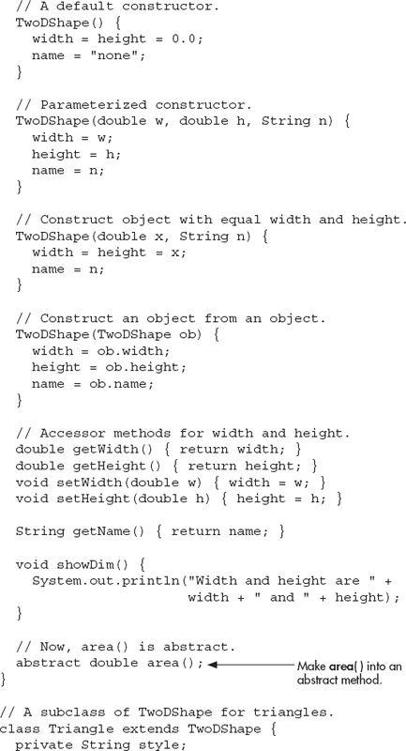
As the program illustrates, all subclasses of TwoDShape
must override area( ). To prove this to yourself, try creating a subclass that does not override area( ). You will receive a compile-time error. Of course, it is still possible to create an object reference of type TwoDShape, which the program does. However, it is no longer possible to declare objects of type TwoDShape. Because of this, in main( ) the shapes array has been shortened to 4, and a TwoDShape object is no longer created.
One last point: Notice that TwoDShape still includes the showDim( ) and getName( ) methods and that these are not modified by abstract. It is perfectly acceptable—indeed, quite common—for an abstract class to contain concrete methods which a subclass is free to use as is. Only those methods declared as abstract need be overridden by subclasses.
Using final
As powerful and useful as method overriding and inheritance are, sometimes you will want to prevent them. For example, you might have a class that encapsulates control of some hardware device. Further, this class might offer the user the ability to initialize the device, making use of private, proprietary information. In this case, you don’t want users of your class to be able to override the initialization method. Whatever the reason, in Java it is easy to prevent a method from being overridden or a class from being inherited by using the keyword final.
final Prevents Overriding
To prevent a method from being overridden, specify final as a modifier at the start of its declaration. Methods declared as final cannot be overridden. The following fragment illustrates final:
Because meth( ) is declared as final, it cannot be overridden in B. If you attempt to do so, a compile-time error will result.
final Prevents Inheritance
You can prevent a class from being inherited by preceding its declaration with final. Declaring a class as final implicitly declares all of its methods as final, too. As you might expect, it is illegal to declare a class as both abstract and final since an abstract class is incomplete by itself and relies upon its subclasses to provide complete implementations.
Here is an example of a final class:
As the comments imply, it is illegal for B to inherit A since A is declared as final.
Using final with Data Members
In addition to the uses of final just shown, final can also be applied to member variables to create what amounts to named constants. If you precede a class variable’s name with final, its value cannot be changed throughout the lifetime of your program. You can, of course, give that variable an initial value. For example, in Chapter 6 a simple error-management class called ErrorMsg was shown. That class mapped a human-readable string to an error code. Here, that original class is improved by the addition of final constants which stand for the errors. Now, instead of passing getErrorMsg( ) a number such as 2, you can pass the named integer constant DISKERR.
Notice how the final constants are used in main( ). Since they are members of the ErrorMsg class, they must be accessed via an object of that class. Of course, they can also be inherited by subclasses and accessed directly inside those subclasses.
As a point of style, many Java programmers use uppercase identifiers for final constants, as does the preceding example. But this is not a hard and fast rule.
Ask the Expert
Q: Can final member variables be made static? Can final be used on method parameters and local variables?
A: The answer to both is Yes. Making a final member variable static lets you refer to the constant through its class name rather than through an object. For example, if the constants in ErrorMsg were modified by static, then the println( ) statements in main( ) could look like this:
Declaring a parameter final prevents it from being changed within the method. Declaring a local variable final prevents it from being assigned a value more than once.
The Object Class
Java defines one special class called Object that is an implicit superclass of all other classes. In other words, all other classes are subclasses of Object. This means that a reference variable of type Object can refer to an object of any other class. Also, since arrays are implemented as classes, a variable of type Object can also refer to any array.
Object defines the following methods, which means that they are available in every object:
| Method |
Purpose |
| Object clone( ) |
Creates a new object that is the same as the object being cloned. |
| boolean equals(Object object) |
Determines whether one object is equal to another. |
| void finalize( ) |
Called before an unused object is recycled. |
| Class<?> getClass( ) |
Obtains the class of an object at run time. |
| int hashCode( ) |
Returns the hash code associated with the invoking object. |
| void notify( ) |
Resumes execution of a thread waiting on the invoking object. |
| void notifyAll( ) |
Resumes execution of all threads waiting on the invoking object. |
| String toString( ) |
Returns a string that describes the object. |
| void wait( ) void wait(long milliseconds)
void wait(long milliseconds, int nanoseconds) |
Waits on another thread of execution. |
The methods getClass( ), notify( ), notifyAll( ), and wait( ) are declared as final. You can override the others. Several of these methods are described later in this book. However, notice two methods now: equals( ) and toString( ). The equals( ) method compares two objects. It returns true if the objects are equivalent, and false otherwise. The toString( ) method returns a string that contains a description of the object on which it is called. Also, this method is automatically called when an object is output using println( ). Many classes override this method. Doing so allows them to tailor a description specifically for the types of objects that they create.
One last point: Notice the unusual syntax in the return type for getClass( ). This relates to Java’s generics feature. Generics allow the type of data used by a class or method to be specified as a parameter. Generics are discussed in Chapter 13.
 Chapter 7 Self Test
Chapter 7 Self Test
1. Does a superclass have access to the members of a subclass? Does a subclass have access to the members of a superclass?
2. Create a subclass of TwoDShape called Circle. Include an area( ) method that computes the area of the circle and a constructor that uses super to initialize the TwoDShape portion.
3. How do you prevent a subclass from having access to a member of a superclass?
4. Describe the purpose and use of the two versions of super described in this chapter.
5. Given the following hierarchy:
In what order do the constructors for these classes complete their execution when a Gamma object is instantiated?
6. A superclass reference can refer to a subclass object. Explain why this is important as it relates to method overriding.
7. What is an abstract class?
8. How do you prevent a method from being overridden? How do you prevent a class from being inherited?
9. Explain how inheritance, method overriding, and abstract classes are used to support polymorphism.
10. What class is a superclass of every other class?
11. A class that contains at least one abstract method must, itself, be declared abstract. True or False?
12. What keyword is used to create a named constant?